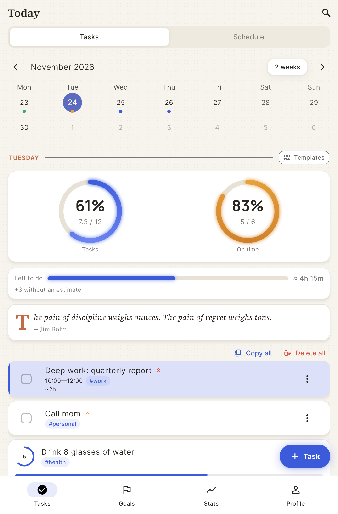
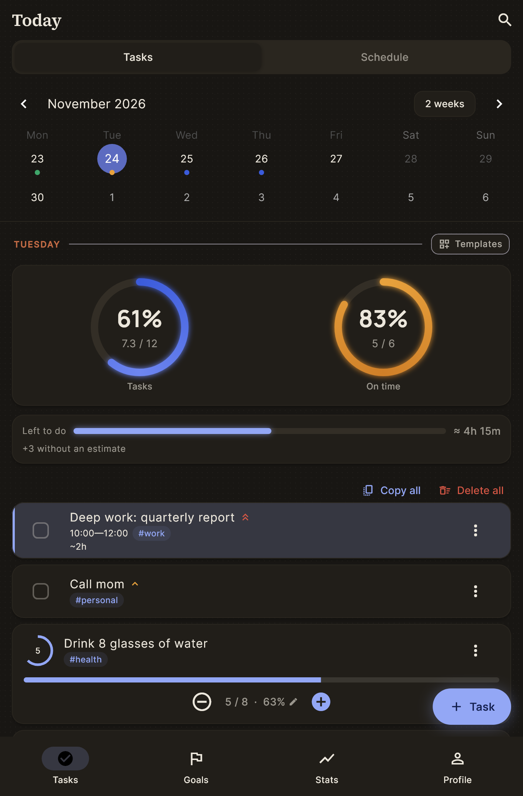

Enitor
Staying out of your way isn't the goal.
Getting better is.
Tasks, goals, and productivity stats honest enough to act on. One app for Windows and Android — fully local, no account, no cloud, no telemetry. Your phone and your PC sync with each other directly: over Wi-Fi or through a server of your own.


Most productivity apps aim for one thing: stay out of your way. Log a task, check it off, forget it. That's the premise Enitor argues with. A task list is only useful if it eventually shows you something about yourself — that you're more consistent than you think, that your estimates are always 20% short, that Tuesdays are where you fall off.
Enitor is built to surface that instead of hiding it behind a clean checklist. Everything below follows from that one decision.
The journey of a thousand miles begins with a single step.
— Lao Tzu, one of the quotes bundled with the app
New in 0.4.0
Everywhere you are
A plan only helps if it's there when you look. Now it is — on your phone, on your laptop, and in the calendar you already keep.
Sync without anyone's cloud
Point a camera at a QR code once, and devices on the same network exchange changes on their own, encrypted. Across networks, run enitor-server on your own computer or VPS.
Goals in hours, goals inside goals
"20 hours of English in November" fills itself from focus sessions. A month's goal can be part of the year's — progress rolls up.
An Android widget
The day's tasks with tick boxes right on the home screen, plus a Quick Settings tile to add a task from anywhere.
Schedule templates
Save a day of classes or shifts and put it on any other day in one tap.
A guided tour
12 steps through what matters on first launch, and a "What's new" card after every update.
Automation, if you want it
Links, Share, Tasker, a command line, MCP for AI assistants and signed webhooks. More below.
What you get
Five things most trackers don't do
Not a feature checklist — the parts that change how a week actually goes.
A weekly retrospective that comes to you
Monday evening by default, Enitor opens the week that just ended — you don't have to remember to go looking for it.
- Productivity measured against the week before that one
- Your best day, and how many days were perfect
- The goals you'd actually set for that week
- Whether your estimates got closer or further off
- No data for that week — no window. It never nags for nothing.
Estimate accuracy that makes you better at planning
Planned time versus actual time, closed into a loop most trackers never close — so you eventually learn that you're not bad at working, you're bad at guessing.
- Measured both by task count and by time weight
- Broken down by tag — the "#work is always 40% over" kind of insight
- A matching card for goals: how well you hit your own deadlines
- Charts at any granularity and range, productivity against on-time rate
Goals across four horizons
Week, month, season, year — the same structure as tasks, so a year's ambition and today's checklist live in one place instead of two apps.
- Counter progress ("read 12 books"), counters in hours that the focus timer fills, and subtask checklists
- A goal can be part of a longer one: months add up to the year
- A grace period after a period ends — a week's goals stay closable through Tuesday
- Unachieved goals go to a backlog instead of quietly disappearing
- Goals appear in the statistics and the weekly retrospective too
Carry-over that's never silent
At the 4:00 AM day boundary Enitor asks what to move forward, copies it onto today, and leaves the original in its own day with a small arrow badge.
- History is never rewritten — which is what makes the stats above trustworthy
- Missed the moment? A catch-up sheet lets you pick from what was left behind
- Days with no tasks are neutral, not red; empty future days are blue, not red
- Streaks are fair: empty days neither break nor pad them, and today never breaks one while it's still open
A year you can see at a glance
A GitHub-style heatmap turns months of effort into one picture — the kind of feedback that makes consistency feel real instead of abstract.
- Daily streak, plus your productivity delta against last week
- Achievements for volume, consistency, punctuality and milestones
- Top-tier ones stay hidden as "???" until you earn them
- Pomodoro sessions log themselves as real time spent, feeding the same stats — and both the focus and the break run as long as suits you, 25/5 being only the default. The timer takes the whole screen and keeps it awake while it runs
The fundamentals
What makes it worth trusting
Nothing is quietly written off
Unfinished tasks and unachieved goals move to a backlog and wait there on a screen of their own until they get done or you drop them on purpose. A reminder brings them back up twice a week. It isn't a ledger of failures — it's a second chance for something you meant to do, instead of it just disappearing.
The day starts at 4:00, not midnight
Working late doesn't flip your "today" out from under you. Finish a task due at 2:00 AM at 1:30 and it counts as on time — not as yesterday's task, done late.
Reminders that stay quiet
General reminders only fire when you actually have unfinished tasks. Backlog nudges twice a week, goals once a month. Nothing arrives just because a clock ticked.
Genuinely yours
No account, no cloud, no telemetry. Everything lives in local storage. Devices sync directly over Wi-Fi or through a server you run yourself; manual export and import cover backups.
Updates without a store
The app checks GitHub for new releases and installs them itself. No gatekeeping, no forced updates, and your data is untouched by the process.
Russian and English
Fully localised both ways, with an instant language switch — no restart, and notifications follow the choice too.
A design system, not a coat of paint
Warm paper surfaces, ink-coloured shadows, one sparing accent, a checkbox stroke that draws itself. Every choice answers to a single metaphor, documented down to the hex code.
Screenshots
The rest of the app
On generated demo data rather than a real personal task list. Click any of them to read the fine print.
Install
Two platforms, one codebase
No installer, no store, no account. Both builds come from the same release.
Windows
Portable build — a folder you can put anywhere. Windows 10 or later.
- Download
enitor-vX.Y.Z-windows.zip - Unpack it wherever you like
- Run
enitor.exe
Unsigned builds sometimes worry antivirus software. If yours objects, add enitor.exe to its trusted list.
Android
A single APK covering arm64, arm32 and x86_64. Android 7.0 or later.
- Download
enitor-vX.Y.Z.apkon the phone - Allow installing from your browser or file manager when asked
- Open it — later updates install from inside the app
Android asks for that permission once, for any app installed outside the Play Store.
Integrations
Works with your tools, on your device
No server of ours sits in the middle. Each integration talks to Enitor on this device, or sends events to an address you typed in yourself.
Links and Share
enitor:// links and text shared from other apps open a filled-in form. Nothing is added until you press Add.
Tasker and Automate
Add tasks from an Android automation, and read your plan for the day if you allow it.
Console and AI assistants
enitor-cli for scripts and Task Scheduler, and an MCP server so Claude Desktop can add tasks. All of it runs on your PC.
Signed webhooks
A task is done, a day is closed, a goal is reached: the event goes to an address you entered, such as n8n or Home Assistant, signed with HMAC-SHA256.
Calendars in and out
Import a timetable (.ics) or a calendar link, export your schedule, or move in from Todoist, Google Tasks or TickTick.
Off until you switch it on
Anything that sends your data out is disabled by default, and every webhook address is a separate choice.
Under the hood
Built to be read, not just used
Flutter and Riverpod, a repository layer over local storage, and a covering test suite. Windows and Android get the same features and the same fixes at the same time — not a phone app in a resized desktop wrapper.
If Enitor turns out to be useful, a star makes it easier for the next person to find. That's the whole ask — there's nothing to buy here and nothing to sign up for.
Star on GitHub